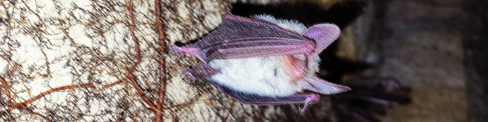
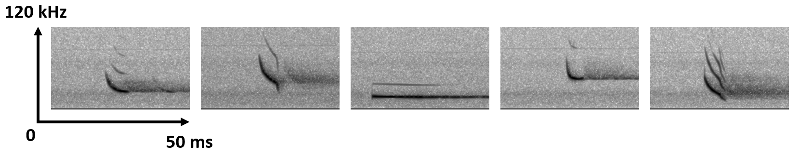
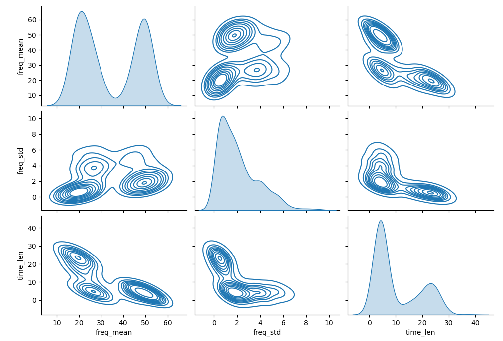
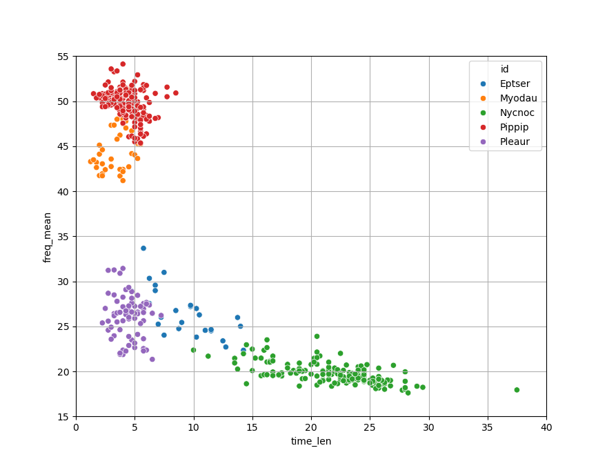

Chapitre IV : Partitionnement
Ce chapitre est une introduction au partitionnement (ou "classification non-supervisée") : principe, mesures de performances et méthodes de base.

Problème de partitionnement
Différents types de partionnement
Par partition
Hiérarchique
La labélisation
Exemple de problème
Comment recenser les espèces de chauves-souris présentes sur le site de l'OVSQ ?
Les chiroptérologues (spécialistes des chauves-souris), utilisent souvent l'identification acoustique pour faire un relevé des espèces de chauves-souris présentes sur un site donné. En effet, les ultrasons émis par les chauves-souris sont caractéristiques de leur espèce, et contrairement à la capture, cette méthode n'a aucun impact sur ces animaux, qui sont protégés en France.
Situé en bordure de la forêt des Sources de la Bièvre à Guyancourt, l'Observatoire de Versailles Saint-Quentin-en-Yvelines (OVSQ) est traversé toutes les nuits d'été par des chauves-souris. C'est pourquoi depuis 2024, l'OVSQ installe un enregistreur d'ultrasons sur son site, afin de recenser les différentes espèces présentes.
Voici quelques exemples de "sonogrammes" obtenus à partir des enregistrements de l'OVSQ :

Chaque image représente un cri de chauve-souris : en abscisse le temps, en ordonnée la fréquence, et en nuance de gris l'amplitude. On a l'impression que ces 5 cris proviennent de 5 espèces différentes : fréquences moyennes différentes, plage de fréquences différentes, durées différentes, formes différentes et nombre d'harmoniques différentes.
Pour les besoins de ce cours, ont été sélectionnés 474 enregistrements de cris de chauves-souris provenant de l'OVSQ. Nous aimerions entrainer un modèle à reconnaitre les espèces de chauves-souris enregistrées, mais nous n'avons pas de vérité terrain pour vérifier ses prédictions. Est-il tout de même possible de diviser ces enregistrements en plusieurs classes selon leurs similarités, et d'identifier par la suite l'espèce correspondant à chaque classe ?
Dans ce but, les 3 features suivantes ont été retenues pour chaque enregistrement de cri de chauve-souris : la fréquence moyenne du fondamental (kHz), l'écart-type en fréquence du fondamental (kHz), et la durée du cri (ms).
Voici le jeu de données complet, au format CSV : Chap4_bats_dataset
Le tableau de données qu'il contient est de la forme :
| freq_mean | freq_std | time_len |
|---|---|---|
| 31.000 | 3.566 | 7.500 |
| 30.340 | 3.068 | 6.250 |
| 28.921 | 2.278 | 4.750 |
| 27.218 | 2.136 | 9.750 |
| 29.574 | 4.091 | 6.750 |
| ... | ... | ... |
| 26.605 | 4.166 | 4.750 |
| 23.630 | 6.046 | 5.750 |
| 26.000 | 3.716 | 4.500 |
Notre problème de partitionnement sera le suivant : Identifier les différentes espèces de chauves-souris dans les enregistrements de l'OVSQ, à partir de la fréquence moyenne du fondamental, de l'écart-type en fréquence du fondamental, et de la durée du cri.
Assurons-nous d'abord qu'une telle partition est possible à partir de ces données.
Une fois le fichier CSV téléchargé, il peut être importé sous Python en tant que DataFrame Pandas à partir de son chemin d'accès "input_path" :
import pandas as pd
df_dataset = pd.read_csv(input_path)
Il est possible avec Seaborn d'afficher ces données sous la forme d'une matrice de corrélations, avec des densités estimées par KDE 2D :
import seaborn as sns
sns.pairplot(df_dataset,kind='kde')
Voici le résultat :

On observe que ces 3 features font apparaitre différents regroupements d'enregistrements : les distributions sont clairement multimodales. Si les frontières entre groupes, ainsi que le nombre exact de groupes restent difficiles à établir, il n'y a aucun doute sur la présence de plusieurs groupes. Et ces classes sont probablement liées à l'espèce de chauves-souris.
Essayer de partitionner notre base de données à partir de ces features a donc du sens. Restera alors à labéliser les classes ainsi délimitées.
Cependant, on peut noter que certains groupes visibles ont l'air moins denses que d'autres. Ceci est plausible : on imagine bien que certaines espèces sont plus communes sur le site que d'autres. Un tel déséquilibre pourrait être problématique pour entrainer notre modèle.
Il est à noter que nous avons ici grandement simplifié le problème et sa résolution pour les besoins de ce cours. Une vraie stratégie de validation pour optimiser les hyperparamètres et éviter le sur-apprentissage ne sera pas appliquée.
L'idée est que nous verrons cet exemple plus en détails en TP.
Mesures de performances
Inertie intra-classe et internie inter-classe
Coefficient de silhouette
La méthode du coude
Méthodes de base
K Moyennes
Classification Ascendante Hiérarchique
Labélisation de l'exemple
